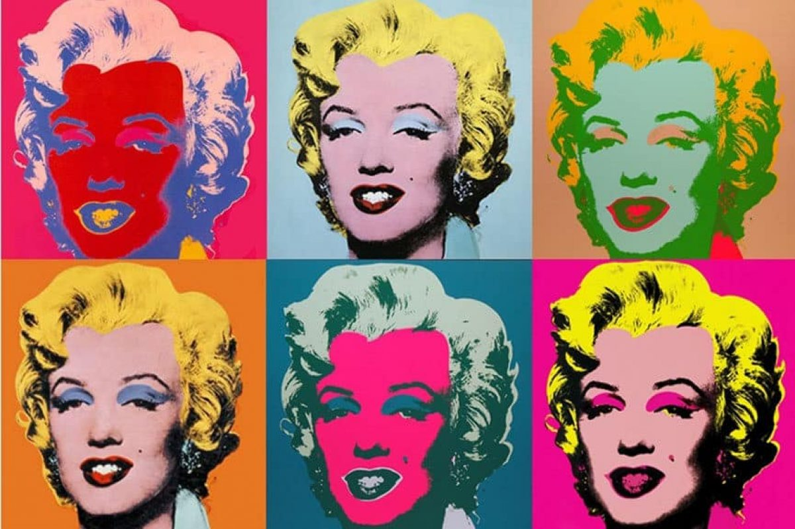
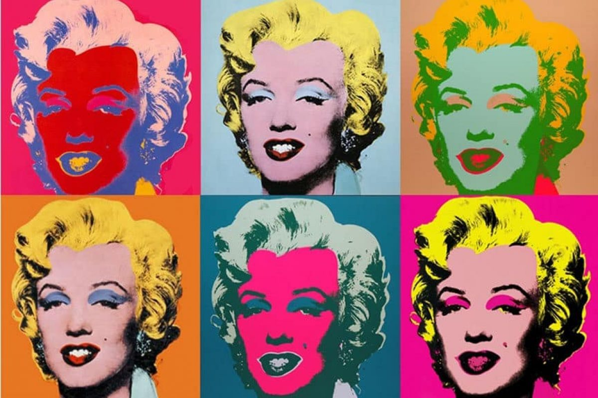

Title: Visual studio + react
Adding the server to the readme files
- Open / create readme.md
- Open / focus on the chat sidebar
- Use ask to review Some aspect of the project
- Run agent to update the readme.md with that aspect, reference the file
- Open the terminal and open a prompt window
- Ask the terminal to `cat` the readme.md file
- Reference the terminal output to ask mode and change the model (try gemini 2.5)
- Open Git tab and review the changes (use mouse to review)
- Advanced - review the rest of the shortcuts from docs
 
